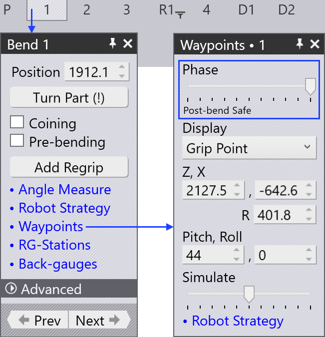

Σημεία πορείας
Επισκόπηση
Κάθε κίνηση του BendMaster αποτελείται από waypoints που διασχίζονται το ένα μετά το άλλο. Όλα τα waypoints μιας κίνησης καθορίζονται από το TecZone, αλλά τα περισσότερα από αυτά μπορούν να προσαρμοστούν. Σημεία που είναι άμεσα σχετιζόμενα με την παρακολούθηση κατά τη διαδικασία κάμψης δεν μπορούν να αλλάξουν. Διάφορες ρυθμίσεις που χρησιμοποιούνται για τον έλεγχο των waypoints παρατίθενται παρακάτω:
-
Αλλαγή της θέσης ενός waypoint
-
Εισαγωγή νέου waypoint ή αφαίρεση υπάρχοντος waypoint
-
Προσαρμογή των ιδιοτήτων κίνησης όπως ταχύτητα και παρεμβολή
-
Προσθήκη νέου waypoint στην επιθυμητή θέση
Για να αποκτήσετε πρόσβαση στον πίνακα Waypoints:
-
Κάντε κλικ άμεσα στον ράγα του ρομπότ
-
Κάντε κλικ στον σύνδεσμο Waypoints από τον πίνακα Pickup, πίνακα Bend, πίνακα Regrip ή πίνακα Deposit.
-
Κάντε κλικ στον σύνδεσμο waypoints σε οποιονδήποτε από τους πίνακες RG-Stations


Πίνακας Waypoints

Ένας τυπικός πίνακας waypoints φαίνεται παραπλεύρως:
-
Ο ρυθμιστής Phase δείχνει την κίνηση βήμα προς βήμα ενός waypoint. Κάθε φάση αντικατοπτρίζει μια συγκεκριμένη λειτουργία ρομπότ όπως pickup, bend, regrip και deposit.
-
Χρησιμοποιήστε την επιλογή Display για να δείτε το:
-
grip point
-
wrist point
-
robot axes.
-
-
Η θέση και η γωνία του καρπού ή της λαβίδας εμφανίζονται και μπορούν να επεξεργαστούν. Αν επιλεγούν οι άξονες του ρομπότ, εμφανίζονται οι τιμές αξόνων του ρομπότ και μπορούν να επεξεργαστούν.
-
Το κίτρινο ίχνος δείχνει τη διαδρομή από το προηγούμενο βήμα σε αυτό, και από αυτό το βήμα στο επόμενο (δείτε την παρακάτω εικόνα). Τα 3 μικρά τρίγωνα υποδεικνύουν τις τοπικές συντεταγμένες X και Y του ρομπότ (καρπός ή λαβίδα).
-
Ο ρυθμιστής Simulate χρησιμοποιείται για τη μετακίνηση της προσομοίωσης από την προηγούμενη φάση στην επόμενη φάση. Αν αυτός βρίσκεται στη μέση, αυτή είναι η πραγματική φάση που επεξεργαζόμαστε.
-
Η ρύθμιση Interpolate χρησιμοποιείται για την εναλλαγή μεταξύ γραμμικών και προσανατολισμένων σε άξονα παρεμβολών.
-
Οι ρυθμίσεις Speed και Rounding είναι χρησιμοποιούνται για την επεξεργασία της ταχύτητας και της ρύθμισης ακρίβειας για αυτό το βήμα.
-
Το πεδίο Regrip stations χρησιμοποιείται για την αλλαγή της θέσης των σταθμών regrip κατά μήκος του άξονά τους.
-
Η επιλογή Insert χρησιμοποιείται για τη δημιουργία νέου waypoint εισάγοντας νέες τιμές. Τα νεοπροστεθέντα waypoints μπορούν να αφαιρεθούν με την επιλογή Remove.
-
Χρησιμοποιήστε τα κουμπιά Prev και Next για να πάτε στα επόμενα ή προηγούμενα βήματα (ή μπορείτε επίσης να χρησιμοποιήσετε τα πλήκτρα βέλους Αριστερά και Δεξιά). Το κλικ στο κουμπί Next θα δείξει κάθε βήμα σε μια φάση. Στο τέλος της φάσης, εμφανίζεται ο επόμενος αντίστοιχος πίνακας waypoint.
Ιδιότητες των waypoints
Ανάλογα με την κατάσταση της διαδικασίας, σε κάθε waypoint δίνεται ένα σύνολο χαρακτηριστικών που αφορούν τον τύπο παρεμβολής, την ταχύτητα και την ακρίβεια κίνησης. Αν απαιτείται, αυτά τα χαρακτηριστικά μπορούν να αλλάξουν.
Αυτές οι ρυθμίσεις ελέγχονται στην ενότητα Advanced του πίνακα waypoint.
| Τύπος Interpolate | Περιγραφή |
|---|---|
Linear |
Γραμμική κίνηση του TCP κατά μήκος μιας διαδρομής |
Axis |
Η κίνηση από την αρχική θέση στην τελική θέση
είναι όσο το δυνατόν πιο γρήγορη, ανεξάρτητα από τη διαδρομή. |
| Τύπος Speed | Περιγραφή |
|---|---|
Max. |
Μέγιστη ταχύτητα |
Fast |
75% της μέγιστης ταχύτητας |
Medium |
50% της μέγιστης ταχύτητας |
Reduced |
30% της μέγιστης ταχύτητας |
Slow |
20% της μέγιστης ταχύτητας |
| Τύπος Rounding | Περιγραφή |
|---|---|
Max. |
Η στρογγυλοποίηση ξεκινά στο 50% του μικρότερου μήκους διαδρομής |
Large |
Η στρογγυλοποίηση ξεκινά στο 35% του μικρότερου μήκους διαδρομής |
Medium |
Η στρογγυλοποίηση ξεκινά στο 20% του μικρότερου μήκους διαδρομής |
Reduced |
Η στρογγυλοποίηση ξεκινά στο 10% του μικρότερου μήκους διαδρομής |
Fine |
Η στρογγυλοποίηση ξεκινά στο 5% του μικρότερου μήκους διαδρομής |
Exact |
Το σημείο βαθμονόμησης προσεγγίζεται ακριβώς χωρίς αλληλεπικάλυψη |

-
Μήκος διαδρομής μεταξύ του σημείου waypoint και του τελικού σημείου
-
Εκτελεσμένο μήκος
-
Μήκος διαδρομής μεταξύ του αρχικού σημείου και του waypoint
-
Waypoint 3 (τελικό σημείο)
-
Waypoint 2 (σημείο στρογγυλοποίησης)
-
Waypoint 1 (αρχικό σημείο)
Προβολή waypoints
Όταν ένα τεμάχιο κάμψης εξοπλίζεται, όλα τα waypoints υπολογίζονται αυτόματα για κάθε φάση κίνησης. Αυτά τα σημεία μπορούν να προσομοιωθούν φάση προς φάση με μια αντίστοιχη περιγραφή.

Οι παρακάτω εικόνες δείχνουν τις φάσεις waypoint της πρώτης λειτουργίας κάμψης (σε πλαϊνή προβολή):

Τροποποίηση waypoints
Η θέση ενός waypoint μπορεί να αλλάξει αν χρειαστεί, για παράδειγμα, για να αποφευχθεί το πέρασμα πάνω από τον άξονα.
Μεταξύ άλλων πτυχών που αφορούν την αποφυγή σύγκρουσης, ανεπιθύμητα waypoints μπορούν να εξαλειφθούν ή νέα waypoints μπορούν να προστεθούν.
-
Όταν αλλάζει η θέση ενός υπάρχοντος waypoint, το TecZone εμφανίζει ένα μήνυμα προειδοποίησης. Κάντε κλικ στο OK για να συνεχίσετε με την αλλαγή του waypoint.

-
Το κλικ στο κουμπί Insert θα προσθέσει νέα waypoints.


-
Τα νεοπροστεθέντα waypoints υποδεικνύονται με +1,+2,κλπ., στο όνομα φάσης όπως φαίνεται παρακάτω:

Προσομοίωση waypoints
Από προεπιλογή ο ρυθμιστής simulate βρίσκεται στη μεσαία θέση. Η κίνηση του ρομπότ από ένα waypoint στο άλλο προσομοιώνεται απρόσκοπτα χρησιμοποιώντας αυτόν τον ρυθμιστή.